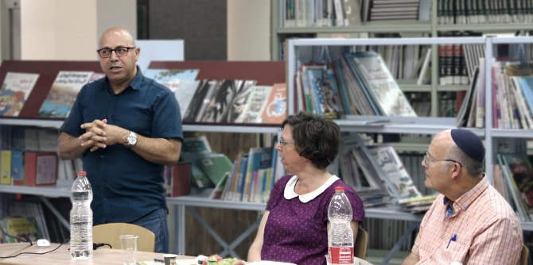
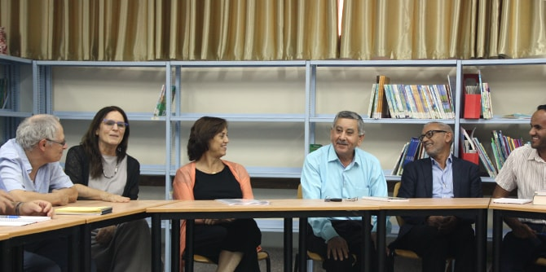

The sixth meeting of the Negev Lab was held at the Rahat municipal library, which is directed by Salah Abu Jafar, a graduate of the first cohort of the Mandel Program for Local Leadership in Rahat. The event focused on strengthening a shared space in the Negev that links different communities and facilitates social and cultural diversity.
The participants heard a lecture from
Dr. Hosni Al-Hatib Shahada, a poet and scholar of Islamic culture and arts, titled "In the Beginning There Was Desert: How Nature Creates Culture." Through an examination of pieces of Islamic art from Israel and around the world, Dr. Shahada explored the central role played by animal and plant life in artistic creativity and culture throughout human history. He explained that Muslim artists never saw themselves as separated from the desert, despite the fact that the desert is widely seen as an environment that is disconnected from humanity.

The event was attended by Talal Al-Qrenawi, the mayor of Rahat, who spoke about the importance of developing engaged civic leaders, and emphasized that “residents, not the municipality, make a city.” Al-Qrenawi reviewed the noticeable growth trends in Rahat during recent years, and noted in particular the positive revolution being led by women in the areas of employment and education in the region.
The meeting continued the series’ fruitful discourse about local culture and about the need to develop cultural leadership in the Negev. Led by
Dr. Ruth Calderon and
Dr. Adi Nir Sagi, the Negev Lab is a forum that enables leaders and key figures from the Negev region to engage in shared study and inspiration on issues related to local culture and artistic creativity. The event was attended by leading figures from the fields of local government, academia, public institutions, and cultural organizations active in local arts in the Negev.

{kind=link}
{kind=link}